Trade on the exchange
Place limit orders, take FAST orders instantly, or sweep the whole book in one tap. Money only ever moves on chain, wallet to wallet.
The order book
③ Exchange › Trade. Every level shows where its depth comes from: FAST orders signed by people, on-chain BOOK orders, and POOL liquidity.
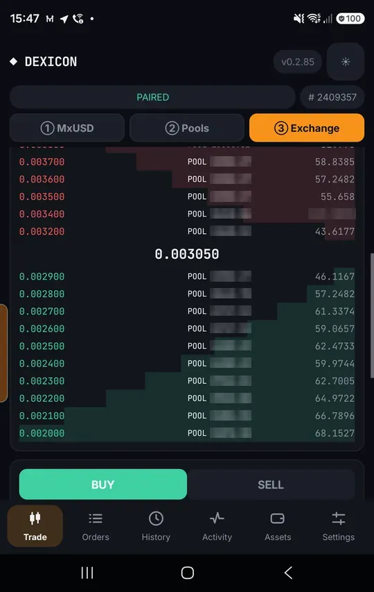
Place a limit order
Enter a price and amount. If nothing crosses your price, the button reads SELL MINIMA (or BUY) and the order rests on the relays.
A resting order is a signed promise backed by coins in your wallet. Nothing leaves your wallet until someone takes it.
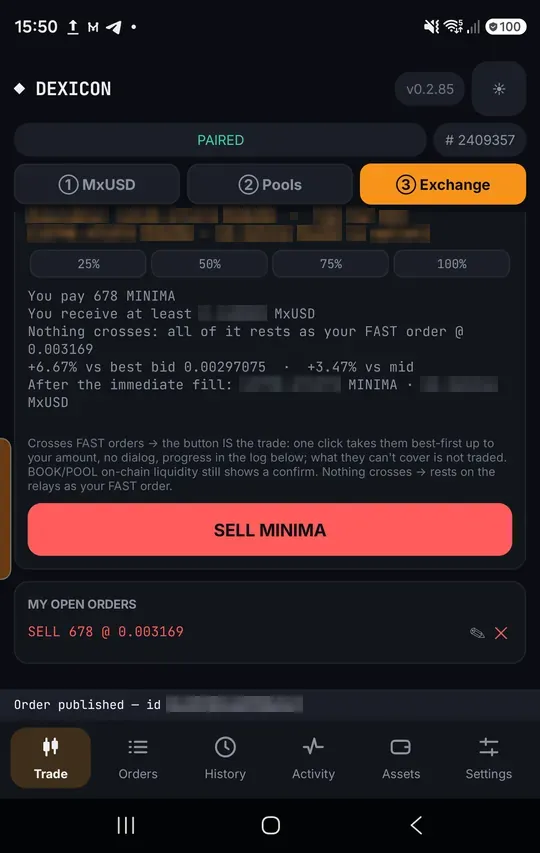
It is live
Your order appears under My open orders and in the book for everyone.
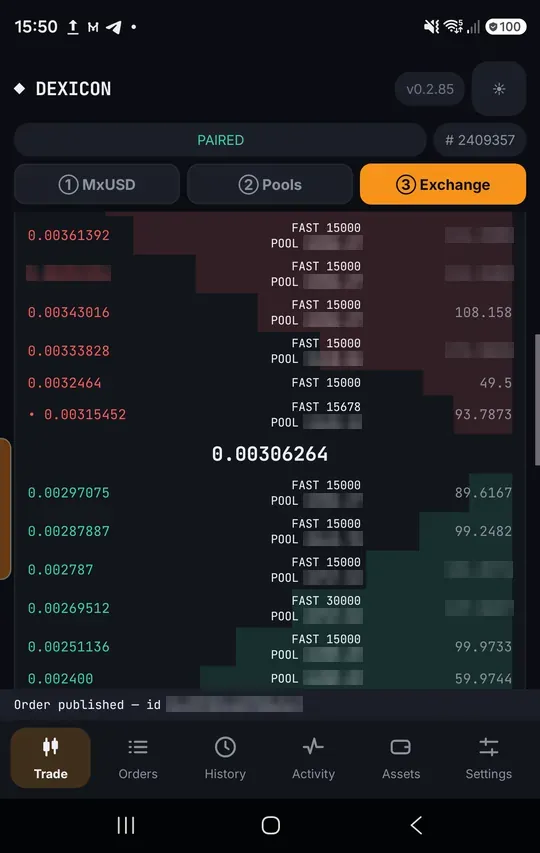
Cancel any time
Tap the cross on your order and confirm. Cancelling costs nothing.
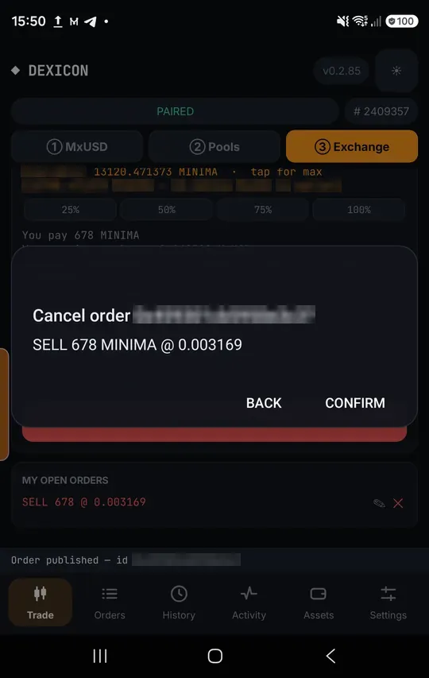
Cancelled
The order disappears from every relay.
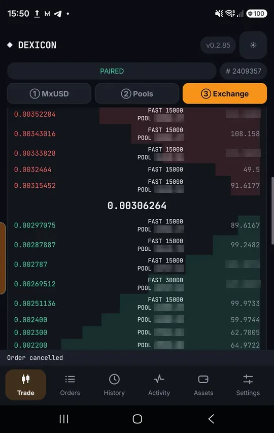
The button names the route
When your price crosses liquidity, the button says how it will fill: FAST (instant) or POOL / BOOK (on chain, about 3 minutes), with the price.
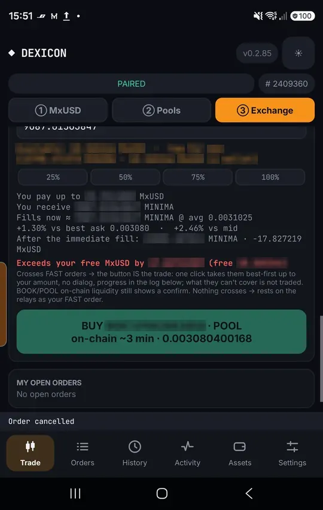
Sweep everything in one tap
When both FAST orders and pools cross, SWEEP takes them together and shows the average. FAST only and POOL only stay underneath; the ★ marks the best price.
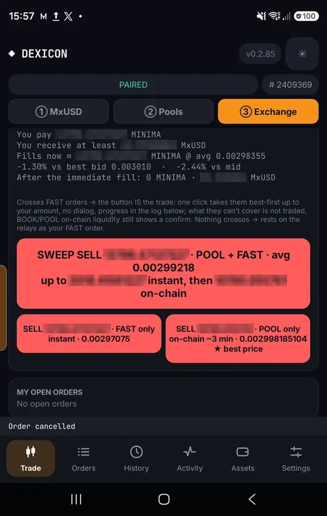
Watch it fill
The trade log shows each step with timings: your side signed, sent to the relays, the maker co-signs.
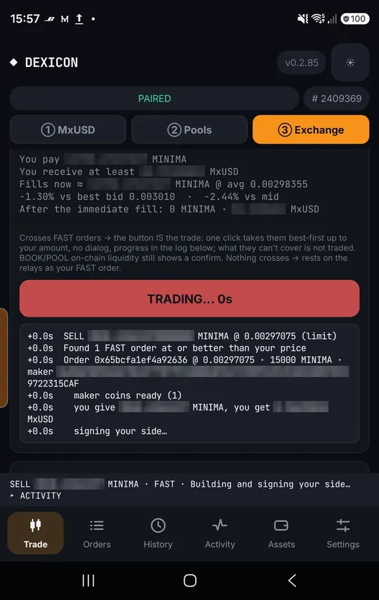
Co-signed
In Activity a FAST fill is co-signed in seconds and settles in the next block.
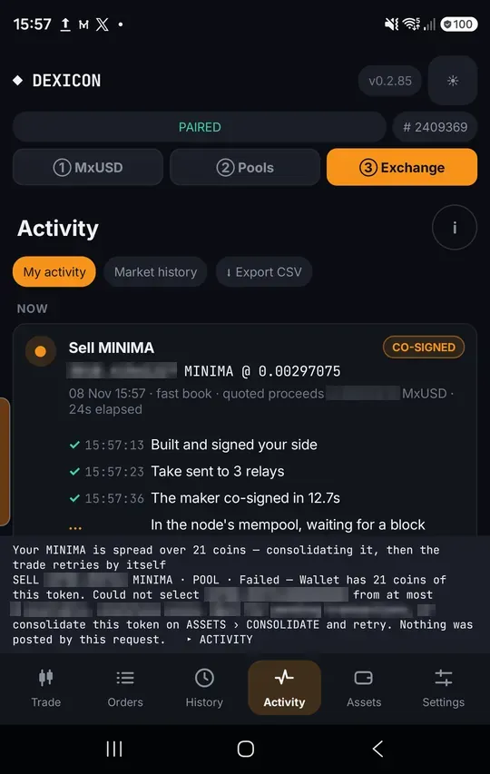
On-chain fills confirm first
A BOOK or POOL fill shows its parts and price impact before you tap Execute.
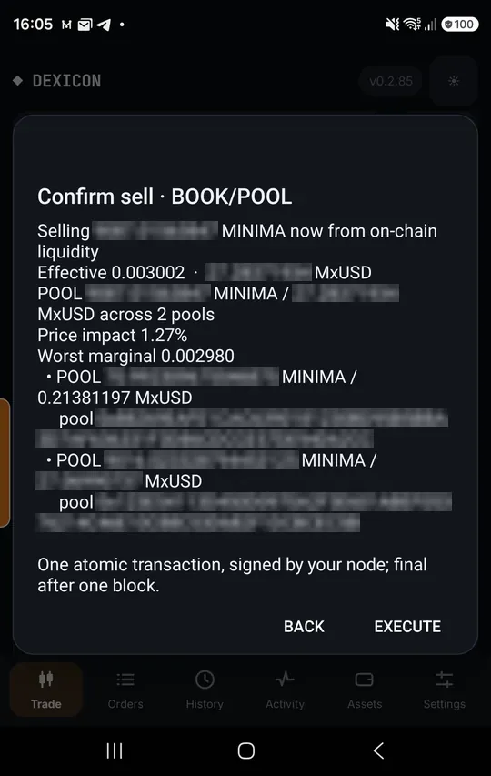
In block
The on-chain trade is posted by your own node and confirms in one block.
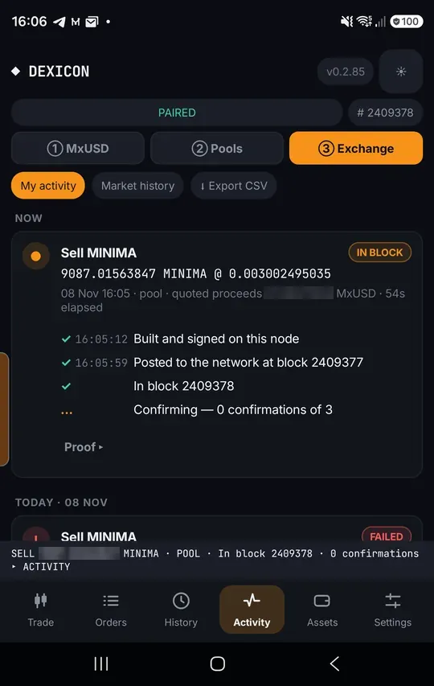
On a tablet or an open Fold
Unfold the screen and the exchange shows two columns: the book stays in view while you place and follow trades.
Selling on chain: the book on the left, the order and its fill estimate on the right
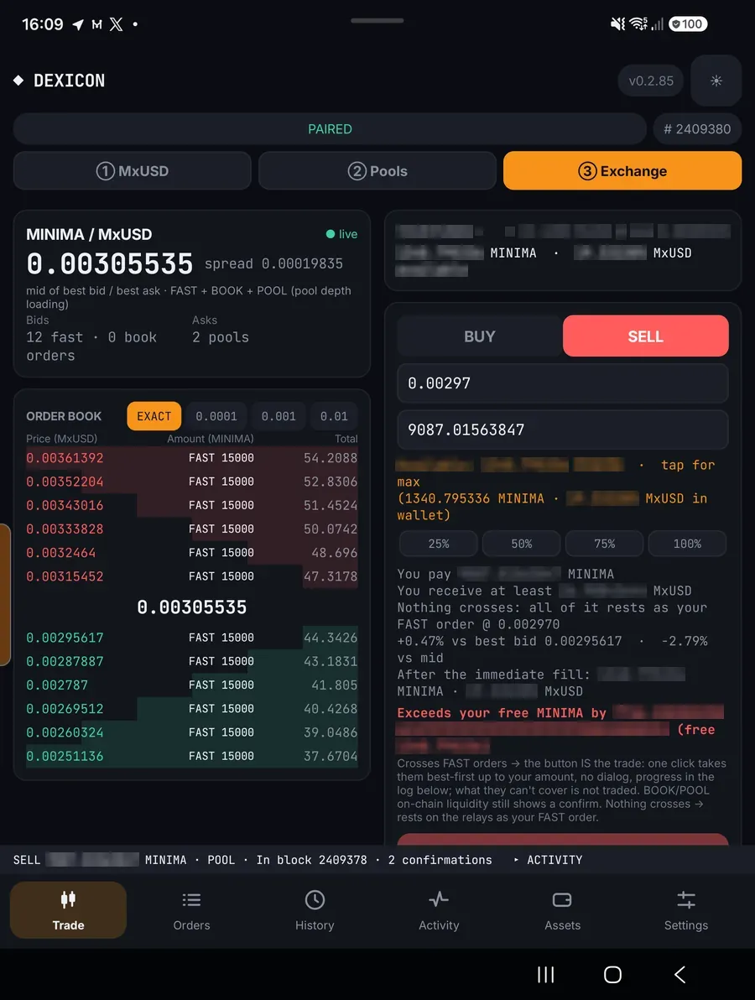
The order panel next to the book
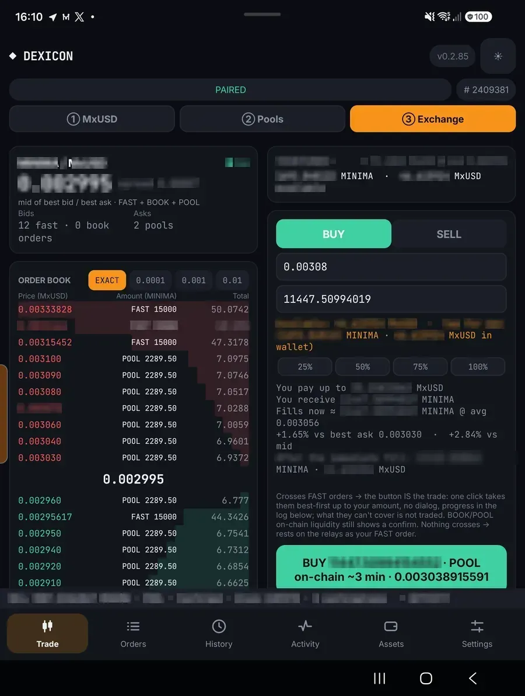
An on-chain buy and its trade log
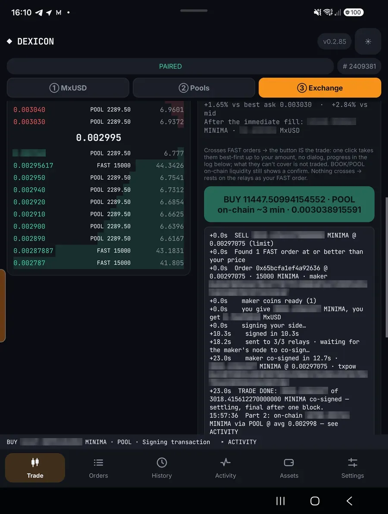
History and Activity side by side
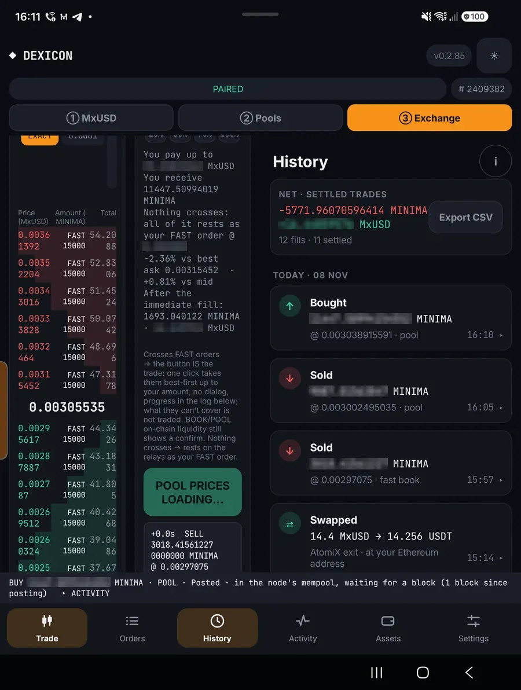
A fill confirming while the book stays in view
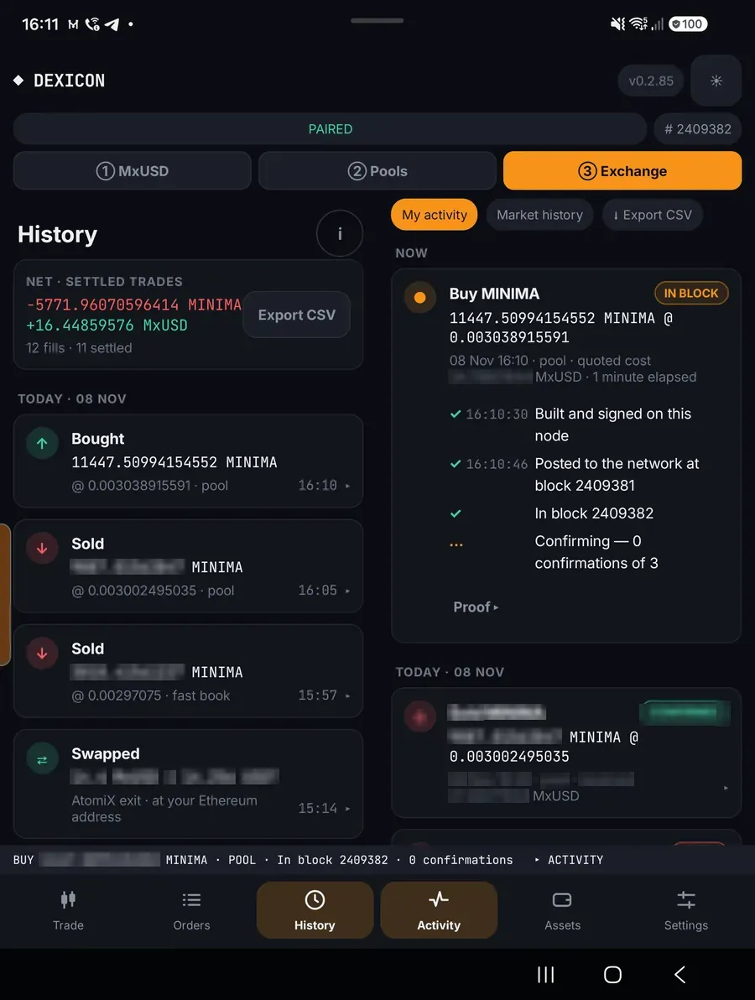